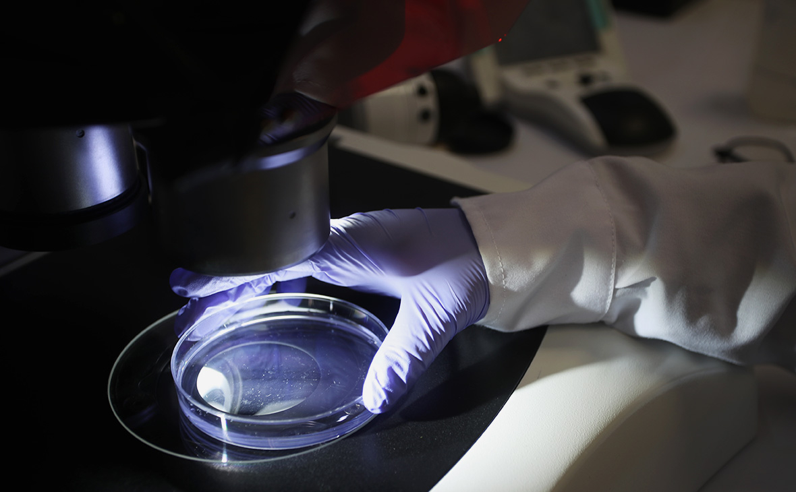

Ученые назвали новую версию появления коронавируса COVID-19
Ученые обнаружили диссертацию врача, который лечил китайских шахтеров.В 2012 году они очищали шахту от продуктов жизнедеятельности летучих мышей, после чего у них появились симптомы, характерные для COVID-19
Коронавирус COVID-19 мог адаптироваться к человеческому организму еще в 2012 году.Об этом вирусолог Джонатан Латэм и биолог Эллисон Уилсон написали в статье для Independent Science News.
Они рассказали об обнаружении диссертации врача Ли Сю, который лечил горняков из китайской провинции Юньнань.Восемь лет назад они в течение двух недель очищали шахту (расположена в нескольких тысячах километров от города Ухань, где произошла вспышка вируса в конце прошлого года) от фекалий летучих мышей, после чего у них появились симптомы, характерные для COVID-19 (пневмония, сухой кашель, боли в конечностях и высокая температура).Заболевшим понадобилась вентиляция легких, трое из шести рабочих умерли.«Доказательства, содержащиеся в диссертации, заставили нас пересмотреть все то, что, как мы думали, мы знали о происхождении COVID-19», — говорится в статье.
Ученые также сообщили, что анализы шахтеров были направлены в лабораторию в Ухане, где было установлено, что они заразились коронавирусом, похожим на атипичную пневмонию.Таким образом, как подчеркнули исследователи, есть основание полагать, что COVID-19 уже был адаптирован к человеческому организму.
В разговоре с New York Post Латэм заявил, что коронавирус «почти наверняка ускользнул» из лаборатории в Ухане.Оба ученых, как пишет издание, полагают, что вирус, которым заразились шахтеры, «превратился» в SARS CoV-2, «необычно патогенный коронавирус, высоко адаптированный для человека», а образцы каким-то образом «сбежали» из лаборатории в прошлом году, запустив таким образом пандемию.
Posted On: 2020-08-16T16:43:00

Content Date: 2020-08-16
Download Date: 2021-03-17
Document ID: L0C049CHK